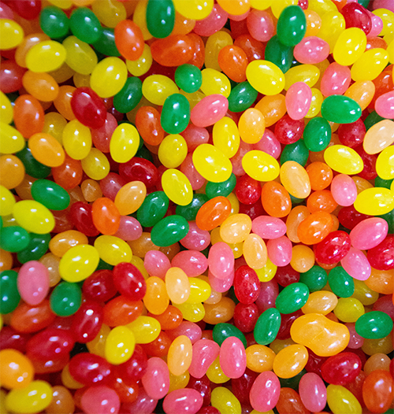
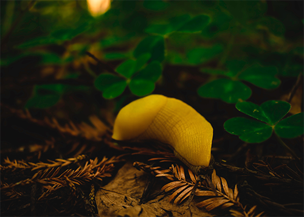

Hello, my name is Victoria. I am attending Moorpark College because I want to gain more job applicable skills and build a portfolio to apply to an animation program. I have a degree in computer science from California State University Northridge but I never learned web design, my concentration was embedded programming. I have realized that I prefer front end development and would rather focus on UX and motion graphics.


I grew up in Moorpark but I have lived in Oregon as well. I am currently living in Ventura County with my best friend Mojo Jojo. He’s a chihuahua dachshund mix and even though he’s 5 he still looks like a puppy.
My favorite holiday is Halloween. No one is ever too old to dress up and eat candy! Some things I enjoy doing on Halloween are watching scary movies with friends and attending or participating in haunted house events.

One of my hobbies is hiking. I like waterfalls and caves and mountain views. Hiking in Oregon and Washington is especially enjoyable because I like seeing all the different fungi and ferns and even the occasional banana slug!
© 2021 Victoria Latta